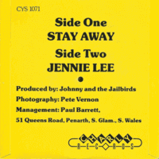

Johnny and the Jailbirds - Stay Away / Jenny Lee (Single, 1980)
01 - Stay Away (2:37)
02 - Jenny Lee (1:40)
© Charly Records :: [CYS 1071]
Notes
Review
306/366 (Project 366)
Self-standing way of UK Rockabilly and vibe of Rock'n'Roll revival. Enthusiastic and versatile.
"Stay Away" is about the very engaging sound of rockin' and rollin' in the spirit of the late seventies, and with a rather attractive taste of the UK scene - nicely done rustic tuned Rockabilly. Cool vocals, strict rhythm and cheerful guitars. Somewhat hillbilly joviality and a little life story. Just fine. I think this is one of those tunes that make the listener fall in love with this sound. No frills, but full of comfort. The second song is "Jenny Lee". A quirky and energetic love song with elements of vintage music, fifties pop and general fanciful way of rockin'. A voice with elation, bubbling backing vocals, entertainment mood and fun eighties without embarrassment..